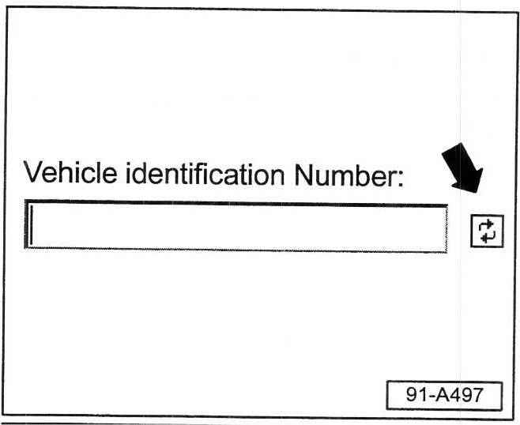
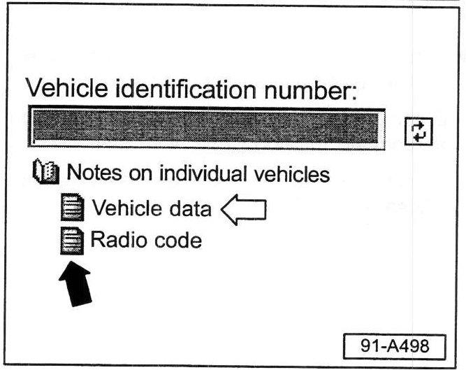
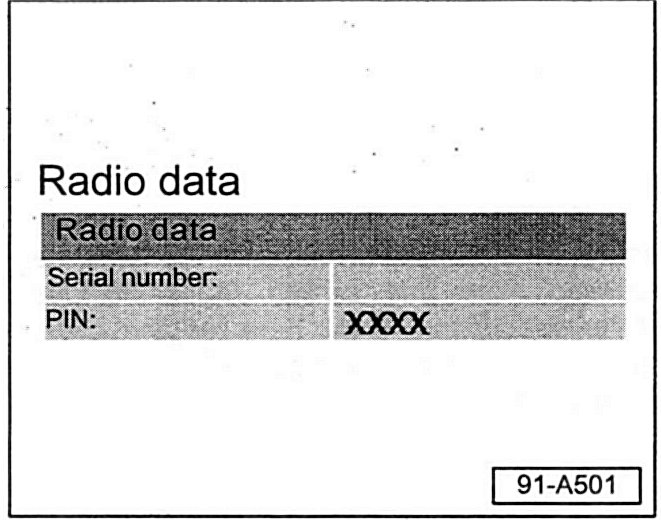

Audio System - Radio Security Code Retrieval
Group: 91Number: 05-02
Date: May 25, 2005
Subject:
Radio, Anti-Theft Radio Security Code Retrieval Procedures
Model(s):
All with Fixed Radio Code 1990 > 2005
Supersedes T.B. Group 91 number 04-12 dated Dec. 21, 2004 due to clarification on how to obtain MSSP Role (Updated information is shown with asterisks..
Condition
Beginning December 21, 2004 you can obtain Volkswagen anti-theft radio security codes by accessing vwhub.com
Beginning Feb. 1, 2005, retrieval of Volkswagen Anti-theft radio security codes using WIN DCS through OTIS will no longer be possible.
Service
Radio codes must be retrieved using the Radio code Tab on vwhub.com.
Requirements
Dealership access to vwhub.com:
^ * vwhub user ID and Password, with the MSSP Role (obtain from your Dealership Extranet Administrator).*
GeKo ID and Password (requires Service Manager authorization). To obtain a GeKo ID and Password see instructions on the GeKo Authorization Form.
^ Your Service Manager can access the GeKo Authorization Form by selecting "All Service Reports & Publications" on the vwhub.
Tip:
^ Request MUST include a copy of the applicant's driver's license
^ Your Service manager must authorize and sign the form.
^ Dual franchise Dealers must have GeKo ID and Passwords for both Audi and Volkswagen.
Procedure:
- Sign on to vwhub.com using your vwhub user ID and Password.
- Select the "Service" at the top of the page.
- Select "Service & Repair"Link at left side of page (or select "All Service" Links at left of page).

- Select the "Radio Code" link -arrow- at left of page.
MSSP Login screen appears:

- Re-enter your vwhub User ID and Password and select "Submit".
Tip:
* In order to log on to this Radio Code link, your vwhub user ID must have access to the MSSP Role.*
For access to this MSSP role, you should contact your Extranet Administrator.

- Input the Vehicle identification number (VIN), then select the forward icon -arrow-

- Similar screen appears (with VIN filled out)
- Select the "Radio code" Icon-black arrow
Tip:
Vehicle data -white arrow- can be also be accessed from this screen (data includes vehicle description, sales type, engine code, final drive code, trim colors as well as access to PR numbers)

- Similar screen appears on right side of screen.
- Input your GeKo ID and Password.
- Select "Logon"

- Similar screen appears (with VIN filled out):
- Input the Radio Serial Number and select "OK"

- Similar screen appears (with radio serial number and PIN number filled out).
- Enter PIN number into radio using appropriate method.
- Select "File" at top of page, then select "Close" to exit System.
Tip:
The following technical support contacts are for VW dealership personnel only
For Radio Code questions, contact the VW Support Center